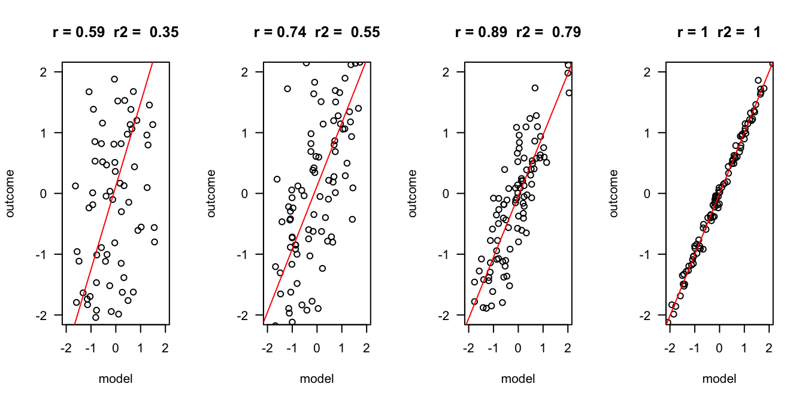

ANOVA as regression
ANOVA
ANalysis Of VAriance
ANOVA’s decompose the variance components and look at the ratio of explained to unexplained variance.
Assuming \(H_0\) is true, we would expect an equal amount of explained and unexplained variance.
Analysing variance components
Decomposing variance example of height for males and females.
Model
\(\LARGE{\text{Outcome} = \text{Model} + \text{Error}}\)
Regression model
In statistics, linear regression is a linear approach for modeling the relationship between a scalar dependent variable y and one or more explanatory variables denoted as X.
\(\LARGE{Y_i = \beta_0 + \beta_1 X_{1i} + \beta_2 X_{2i} + \dotso + \beta_n X_{ni} + \epsilon_i}\)
In linear regression, the relationships are modeled using linear predictor functions whose unknown model parameters \(\beta\)’s are estimated from the data (\(b\)).
Outcome vs Model
The better the model, the more it is the same as the outcome variable. Hence, they have a high correlation \(r\), and the explained variance \(R^2\) is also high.
Formal model
\[ \begin{align} \text{model} &= \beta_0 + \beta_1 X_{1i} \\ \\ Y_i &= \beta_0 + \beta_1 X_{1i} + \epsilon_i \\ \hat{Y}_i &= \beta_0 + \beta_1 X_{1i} \\ \\ \epsilon_i &= Y_i - \hat{Y}_i \end{align} \]
- \(_i\) is the index number for the data. A row in your data.
- \(\beta\) is the true population parameter
- \(X\) is your predictor variable
- \(\epsilon\) is the error. How much is the model off.
- The \(\hat{\phantom{Y}}\) refers to the expected outcome. So, it is the result of the model.
ANOVA as regression
To run an ANOVA as a regression model we need to create dummy variables for each categorical variable that we use. We need \(k - 1\) dummy variables, where \(k\) is the amount of categories.
So, for the categorical variable biological sex, we need 1 dummy.
Dummy variable
Creating a dummy variable means making a new variable in SPSS to turn on that category, and turn all other categories off.
In our case, biological sex has two categories, so we need one dummy. Let’s call our dummy female.
\[ \begin{align} \widehat{outcome}_i &= b_0 + b_1 \text{dummy}_i \\ \widehat{height}_i &= b_0 + b_1 \text{female}_i \end{align} \]
- \(\text{dummy} = \{0, 1\}\), on or off
- \(\text{female} = \{0,1\}\), on or off
Example
Regression analysis
| height | |||
| Predictors | Estimates | CI | p |
| (Intercept) | 161.48 | 159.90 – 163.05 | <0.001 |
| sex [male] | 15.42 | 13.21 – 17.63 | <0.001 |
| Observations | 132 | ||
| R2 / R2 adjusted | 0.595 / 0.591 | ||
- \(b_0 = 161.48\), \(\bar{x}_\text{females} = 161.48\)
- \(b_1 = 15.42\), \(\bar{x}_\text{males} = b_0 + b_1 = 176.9\)
Regression model
\[ \begin{align} \widehat{\text{height}}_i &= b_0 + b_1 \times \text{dummy}_i \\ \widehat{\text{height}}_i &= 161.48 + 15.42 \times \text{dummy}_i \end{align} \]
r
The correlation between height and expected height as indication of how wel our model fits.
R squared
\(R^2\) is simply the squared correlation \(r = 0.77\), \(R^2 = r \times r = 0.5929\).
This represents the amount of variance explained in relation to the total amount of variance.
Total variance

Sums of squares \(\Sigma^n_{i = 1} (x_i - \bar{x})^2\) devided by the degrees of freedom \(n-1\).
\[\text{Variance} = s^{2} = \dfrac{\sum_{i=1}^{n}(x_i - \overline{x})^{2}}{n - 1}\]
Explained variance
Between groups
What part of the variance is explained by the model.
\(R^2 = \frac{{SS}_{explained}}{{SS_{total}}}\)
Unexplained variance
Unexplained = within groups variance = error = residuals
This is the error / residual (\(\epsilon\)). The difference between model expectation and observed measurement.

F value
This is the ratio between average explained and unexplained variance.
\(F = \frac{{MS}_{Explained}}{{MS_{Unexplained}}} = \frac{{MS}_{model}}{{MS_{error}}} = \frac{{MS}_{model}}{{MS_{Residuals}}}\)
Analysis of Variance Table
Response: height
Df Sum Sq Mean Sq F value Pr(>F)
sex 1 7843.4 7843.4 190.64 < 2.2e-16 ***
Residuals 130 5348.5 41.1
---
Signif. codes: 0 '***' 0.001 '**' 0.01 '*' 0.05 '.' 0.1 ' ' 1